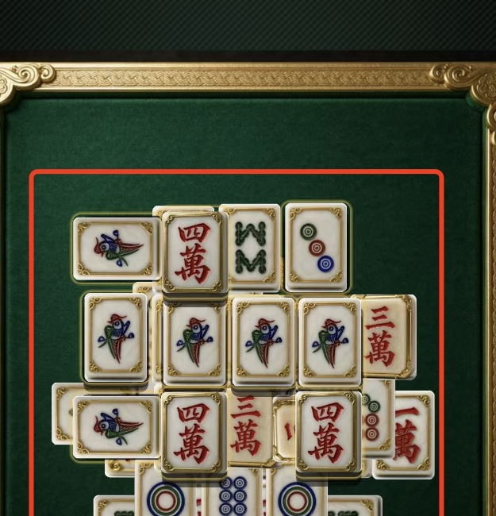
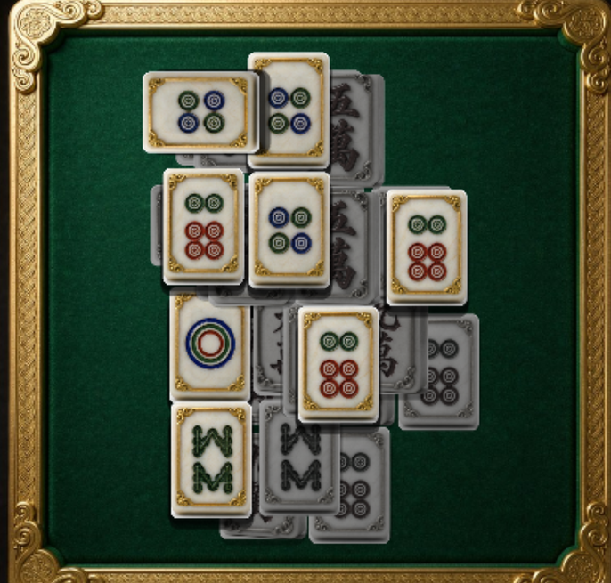
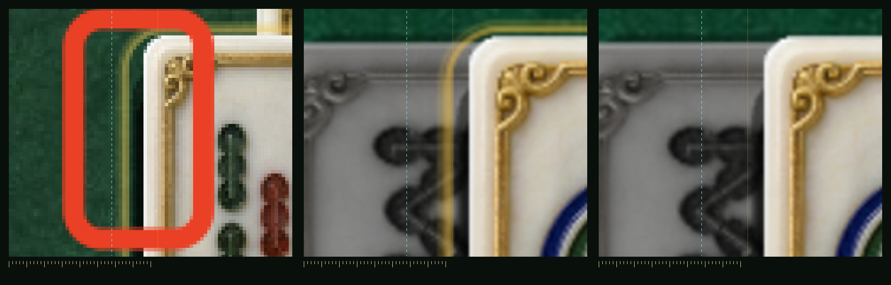
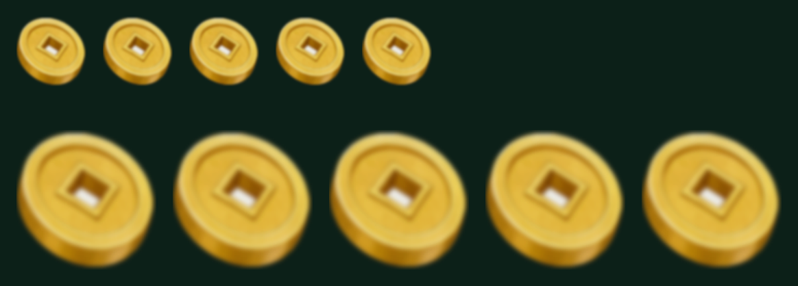

被压的牌改成灰阶 + 压暗，可点的保持原色 —— 规则收敛成一句话： 彩色 = 能点，灰的 = 不能点。左边是你截图里的场面，右边是本轮构建的同一个关卡 （两张来源不同、不追求逐像素对齐，只看"被压的牌是不是还带颜色"）。


| 量 | 改前 | 改后 | 说明 |
|---|---|---|---|
| 平均饱和度 | 0.302 | 0.038 | 降到 13%，肉眼等价于「去色」 |
| 贴图 | 母版 224×298 | 灰阶 168×224 | 0.75 倍备用贴图，只给「被压」用 |
| 叠加方式 | Sprite.color 乘 0.63 | 换贴图 | 见下方说明 |
Sprite.color 只会逐通道乘法 —— 它能压暗、降不了饱和度。
红墨 (190,60,50) 乘 0.66 得到 (125,40,33)，饱和度照样 0.74，红还是红。
3.8.8 也没有内置的 gray-sprite 材质（effects/for2d/ 只有 spine / sprite / sprite-renderer 三个）。tools/r45c-gray-tiles.py，口径 = 方案页 C 的
grayscale(.9) brightness(.66) contrast(.95)），运行时零开销、零风险。
你圈的那处，我把它量出来了：牌体左缘外侧有一道暖金线，那是代码画的
「金环 + 三层外发光」（TileRenderer.drawRing）；而牌图自带的金框在牌体之内
—— 两道线是两回事。我删的是外侧那道，牌图自身的金饰原样保留。

| 量（牌体左缘外侧 0~13 设计 px 带内） | 改前 | 改后 | 说明 |
|---|---|---|---|
| 有暖金的扫描线 | 738 / 760 | 0 / 760 | 改前几乎整条牌边都有，改后一条都没有 |
| 暖金像素数 | 19162 | 0 | 同一块像素区、同一套暖色判定口径 |
| 行内最宽 | 33 px = 4.1 设计 px | 0 | 比主环标称 3 px 略宽，是叠加了最内层外发光 |
| ②③ 两张影像的差异像素 |
39556（6.44%），包围盒 x[299,639] y[162,959]，全部落在该牌周边
⇒ 这组 A/B 的唯一变量就是这道环 | ||
COLOR.GOLD = #F6C445；
主环 w+4 / 3px / a132；外发光 i=1..3 → w+8i / (2.5|1)px / a=52/i）。
②③ 两张的唯一差异就是这道环，差异像素的包围盒也证明它没跑到别处去。
①（你的截图）只作实况佐证，比例尺与右两张不一定严格一致。
Base / Face / FaceDead 三个，名为 Ring 的节点
实测 0 个。这条断言写进 tools/_r45c-verify.mjs，以后谁改回去都会红。
单枚从 34 → 68 设计 px，素材换成按你选的「柔虚」预烘的那一版 （上排 34 = 改前，下排 68 = 改后，同一张素材、同一块底色）。

| 项 | 值 | 依据 |
|---|---|---|
| 显示尺寸 | 68 × 68 设计 px | 你要的「放大一倍」，实测节点 contentSize = 68×68 |
| 素材 | splash/coin_rain.png 136×136 | 68 × 2；真机物理是 68 × 1.6853 = 114.6，136 是 1.19× 过采样 |
| 虚化 | 高斯 blur 3.6 @204 等比缩到 2.4 @136 | 与方案页 B 版逐像素对账：平均绝对差 1.8% |
| 放大上限 | 66.5 设计 px | 源图 112 宽 ÷ 1.6853；68 只超 2.3%，正好被柔虚盖掉 |
| 结算卡小金币 | 仍用原始 112×104 | 刻意分两套素材，图标不能被柔虚版连坐（已断言） |
| # | 断言 | 实测 |
|---|---|---|
| 1 | 可点与被压同时存在（否则这条没有判别力） | 8 / 22 张 |
| 2 | 每张存活牌都有 Face 与 FaceDead | 30 / 30 |
| 3 | 显示态与 pickable 完全一致 | 不一致 0 张 |
| 4 | 没有一张退回「原色压暗」兜底 | 兜底 0 张 |
| 5 | 被压贴图 = 可点贴图的 0.75 倍 | 160×224 / 208×298 |
| 6 | 牌节点下不存在 Ring 子节点 | 0 个 |
| 7 | 金币雨已生成 | 26 枚 |
| 8 | 单枚显示尺寸 = 68×68 | 68 × 68 |
| 9 | 用的是柔虚素材 136×136 | 136 × 136 |
| 10 | 结算卡小金币仍用原始素材 | 112 × 104 |
| 11 | 两张贴图切换后牌体几何不动 | 四缘位移 0.0 物理 px |
| 12 | 全程无未捕获异常 | 0 条 |
| 13 | 同相机 A/B：按原参数补画回环后，牌缘外侧才重新出现暖金 | 19162 → 0 px |